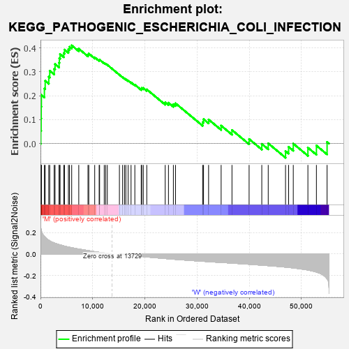
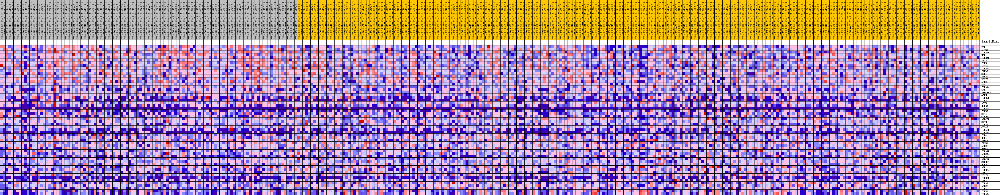
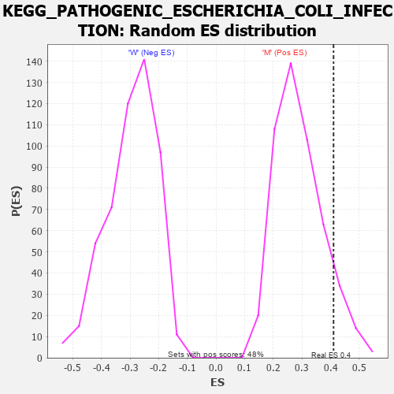

| Dataset | MUC16.MUC16.cls#M_versus_W.MUC16.cls#M_versus_W_repos |
| Phenotype | MUC16.cls#M_versus_W_repos |
| Upregulated in class | M |
| GeneSet | KEGG_PATHOGENIC_ESCHERICHIA_COLI_INFECTION |
| Enrichment Score (ES) | 0.4103167 |
| Normalized Enrichment Score (NES) | 1.4078785 |
| Nominal p-value | 0.09504132 |
| FDR q-value | 0.26005742 |
| FWER p-Value | 0.867 |

| PROBE | DESCRIPTION (from dataset) | GENE SYMBOL | GENE_TITLE | RANK IN GENE LIST | RANK METRIC SCORE | RUNNING ES | CORE ENRICHMENT | |
|---|---|---|---|---|---|---|---|---|
| 1 | EZR | na | 60 | 0.244 | 0.0544 | Yes | ||
| 2 | ACTG1 | na | 124 | 0.226 | 0.1046 | Yes | ||
| 3 | TUBA1B | na | 141 | 0.222 | 0.1548 | Yes | ||
| 4 | NCL | na | 172 | 0.215 | 0.2031 | Yes | ||
| 5 | TUBB4B | na | 747 | 0.164 | 0.2299 | Yes | ||
| 6 | RHOA | na | 900 | 0.155 | 0.2625 | Yes | ||
| 7 | TUBB | na | 1589 | 0.129 | 0.2793 | Yes | ||
| 8 | KRT18 | na | 1770 | 0.123 | 0.3041 | Yes | ||
| 9 | TUBA1C | na | 2621 | 0.103 | 0.3121 | Yes | ||
| 10 | YWHAQ | na | 2793 | 0.100 | 0.3318 | Yes | ||
| 11 | CDH1 | na | 3560 | 0.088 | 0.3380 | Yes | ||
| 12 | YWHAZ | na | 3612 | 0.087 | 0.3569 | Yes | ||
| 13 | ROCK2 | na | 3753 | 0.085 | 0.3738 | Yes | ||
| 14 | ARPC5 | na | 4457 | 0.076 | 0.3783 | Yes | ||
| 15 | WASL | na | 4605 | 0.074 | 0.3924 | Yes | ||
| 16 | TUBA4A | na | 5351 | 0.066 | 0.3939 | Yes | ||
| 17 | WAS | na | 5561 | 0.063 | 0.4044 | Yes | ||
| 18 | ARHGEF2 | na | 5978 | 0.059 | 0.4103 | Yes | ||
| 19 | OCLN | na | 7334 | 0.046 | 0.3963 | No | ||
| 20 | TUBB7P | na | 9099 | 0.032 | 0.3717 | No | ||
| 21 | TUBAL3 | na | 9252 | 0.031 | 0.3759 | No | ||
| 22 | ACTB | na | 10388 | 0.022 | 0.3603 | No | ||
| 23 | HCLS1 | na | 11240 | 0.016 | 0.3486 | No | ||
| 24 | TUBA3C | na | 11328 | 0.015 | 0.3505 | No | ||
| 25 | TUBB8 | na | 12213 | 0.010 | 0.3367 | No | ||
| 26 | CD14 | na | 12478 | 0.008 | 0.3337 | No | ||
| 27 | CLDN1 | na | 12804 | 0.006 | 0.3291 | No | ||
| 28 | ARPC5L | na | 15121 | -0.001 | 0.2873 | No | ||
| 29 | CTTN | na | 15733 | -0.004 | 0.2770 | No | ||
| 30 | TUBB1 | na | 16097 | -0.005 | 0.2717 | No | ||
| 31 | CDC42 | na | 16352 | -0.007 | 0.2686 | No | ||
| 32 | TUBA3E | na | 16794 | -0.009 | 0.2628 | No | ||
| 33 | TUBB4A | na | 17349 | -0.012 | 0.2555 | No | ||
| 34 | TLR4 | na | 18075 | -0.016 | 0.2460 | No | ||
| 35 | NCK1 | na | 19299 | -0.022 | 0.2289 | No | ||
| 36 | ARPC4 | na | 19394 | -0.022 | 0.2323 | No | ||
| 37 | ITGB1 | na | 19692 | -0.024 | 0.2323 | No | ||
| 38 | ARPC2 | na | 20361 | -0.027 | 0.2263 | No | ||
| 39 | PRKCA | na | 23890 | -0.042 | 0.1719 | No | ||
| 40 | TUBA3D | na | 24515 | -0.044 | 0.1706 | No | ||
| 41 | ARPC1A | na | 25456 | -0.048 | 0.1645 | No | ||
| 42 | TUBB3 | na | 25865 | -0.049 | 0.1683 | No | ||
| 43 | ARPC1B | na | 31065 | -0.067 | 0.0895 | No | ||
| 44 | CTNNB1 | na | 31234 | -0.068 | 0.1018 | No | ||
| 45 | NCK2 | na | 32204 | -0.071 | 0.1004 | No | ||
| 46 | ABL1 | na | 34607 | -0.079 | 0.0748 | No | ||
| 47 | TUBB2A | na | 36682 | -0.085 | 0.0565 | No | ||
| 48 | FYN | na | 39965 | -0.095 | 0.0187 | No | ||
| 49 | ROCK1 | na | 42394 | -0.104 | -0.0016 | No | ||
| 50 | TUBB2B | na | 43628 | -0.108 | 0.0007 | No | ||
| 51 | LY96 | na | 46941 | -0.122 | -0.0315 | No | ||
| 52 | TUBA8 | na | 47534 | -0.125 | -0.0138 | No | ||
| 53 | ARPC3 | na | 48426 | -0.130 | -0.0004 | No | ||
| 54 | TLR5 | na | 51228 | -0.149 | -0.0172 | No | ||
| 55 | TUBB6 | na | 52859 | -0.168 | -0.0086 | No | ||
| 56 | TUBA1A | na | 54901 | -0.229 | 0.0066 | No |

